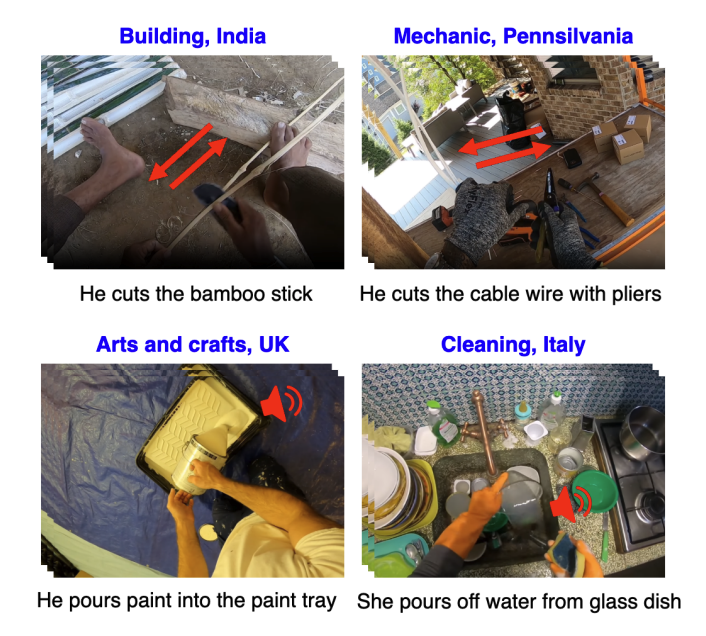
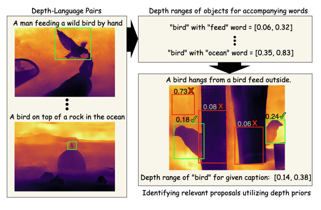
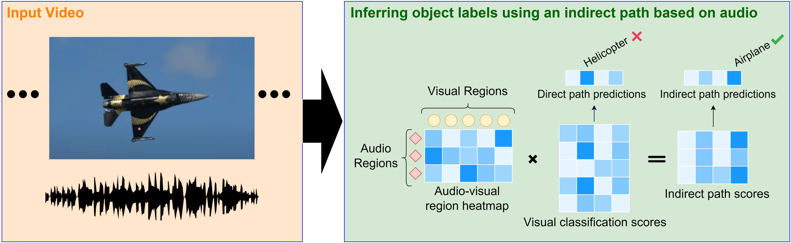

|
Cagri Gungor Ph.D. Student University of Pittsburgh Pittsburgh, PA cagri.gungor at pitt.edu [CV] [Google Scholar] |
I am a fourth-year Ph.D. student in the Intelligent Systems Program at SCI, University of Pittsburgh where I am advised by Prof. Adriana Kovashka. I received my B.Sc. degree in Computer Science from Bilkent University, Turkey. My research bridges the gap between visual perception and human understanding by harnessing complementary modalities such as audio, depth, motion, and touch to tackle visual uncertainty in computer vision. From weak supervision to domain generalization and cross-modal generation, my work explores how hallucinated and real sensory cues can be integrated to build adaptive, robust, and perceptually grounded AI systems.
News
[Jun 2025] I will join Amazon’s Last Mile – New Initiatives team in Santa Cruz, CA as an Applied Scientist Intern.[May 2025] I have officially received my M.Sc. degree in Intelligent Systems from the University of Pittsburgh as part of my Ph.D. program.
[Dec 2024] One paper has been accepted to ICASSP 2025.
[May 2023] I interned at Dolby Laboratories (San Francisco, CA) over the summer.
[Nov 2023] One paper has been accepted to WACV 2024.
[Oct 2022] One paper has been accepted to WACV 2023.
[May 2022] I interned at Lenovo Research (Chicago, IL) over the summer.
Publications
|  |
Integrating Audio Narrations to Strengthen Domain Generalization in Multimodal First-Person Action Recognition Cagri Gungor, Adriana Kovasha To appear in 2025 IEEE International Conference on Acoustics, Speech, and Signal Processing (ICASSP 2025) at Hyderabad, India [Paper] |
|  |
Boosting Weakly Supervised Object Detection using Fusion and Priors from Hallucinated Depth Cagri Gungor, Adriana Kovasha To appear in 2024 IEEE/CVF Winter Conference on Applications of Computer Vision (WACV 2024) at Waikoloa, Hawaii. [Paper] [Webpage] |
|  |
Complementary Cues from Audio Help Combat Noise in Weakly-Supervised Object Detection Cagri Gungor, Adriana Kovasha To appear in 2023 IEEE/CVF Winter Conference on Applications of Computer Vision (WACV 2023) at Waikoloa, Hawaii. [Paper] [Webpage] |